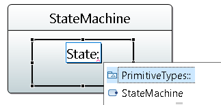

This part of the documentation deals with features provided by the integration to Papyrus.
For a better experience, you should activate the Papyrus Perspective before reading this documentation.
Once a UML model is created, go into the Model Explorer, select a UML element from which to start the document, then Right-Click-> New Class Diagram.
The corresponding sirius diagram is opened inside Papyrus.
Or from the View Explorer, click on the create view, select the root element and finally the view to create.
The created DSemanticDiagram are displayed in the ModelExplorer as children of the element . This customization is not loaded by default.
Open the Model Explorer view and use the customize model explorer to load the Sirius Diagram customization:
To have a global overview of sirius diagram. You can have a look at the sirius diagram documentation. See https://www.eclipse.org/sirius/doc/user/diagrams/Diagrams.html
While most part is similar to the former GMF diagram. There are some small differences between both.
While using sirius diagram, you can enable or disable filters on the representation. For exemple filters can show or hide some kind of view, or change the label of elements. This was used to replace Benpoints preference and to customize the displayed label with or without stereotype.
Layers can be defined to hide or show several mapping and/or several tools in the palette in a diagram. This functionality is only used for comment at that moment.
Palette tools is divided in two categories, one for the creation of element represented has nodes and the other for the creation of edge elements.
Drag and drop tools have been implemented to allow to create views for existing element that are not represented yet in the diagram.
Drag and drop inside diagram is also available, but depending of the kind of element that is drag and drop, the behavior can be different.
Deletion of graphical element (only the view, not the semantic element) can be done using the shortcut (SHITF + DEL)
Deletion from the model can be done using a simple delete with DEL key.
Using the shortcut CTRL + H, you can simply show or hide and element from the diagram.
Pinning an element makes it protected from any action which can modify the position of this element in the diagram, such as arrange all.
Hyperlink can be created on any diagram elements. Once referenced as default hyperlink, a view can be opened by double click.

Shortcuts can be created by drag and dropping representations. Once added in the diagram, the view can be opened by double click.

Xtext autocompletion is available when renaming an element using direct edition with F2 shortcut. When using Ctrl + Space key, the auto completion tool propose a list of label to use.

Sequence diagram have some specificity, like the kind of element that can be represented. See https://www.eclipse.org/sirius/doc/user/sequences/Sequence%20Diagrams.html
To have a better view and simplify the correction of problems in sequence diagrams, it is possible to make observation points visible.